00เทพเจ้าใน 40K มาจากไหน?
ในจักรวาล 40K เทพเจ้า "มีอยู่จริง" แต่ส่วนใหญ่ไม่ได้สร้างโลก — พวกมันเกิดจาก Warp (วาร์ป) มิติพลังงานที่สะท้อนอารมณ์และความคิดของสิ่งมีชีวิตทุกตน เมื่ออารมณ์แบบเดียวกันสะสมมากพอเป็นเวลานาน ก็ก่อตัวเป็นตัวตนที่มีจิตใจ — นั่นคือเทพแห่ง Chaos ส่วนเทพกลุ่มอื่นมีที่มาต่างกัน เช่น C'tan เป็นสิ่งมีชีวิตพลังงานจากดวงดาว และเทพของ Orks เกิดจากความเชื่อของ Orks เอง
เทพแห่ง Chaos
Khorne, Nurgle, Tzeentch, Slaanesh
เทพของเผ่าต่าง ๆ
เทพ Aeldari, Gork และ Mork
สิ่งที่ถูกบูชาเหมือนเทพ
จักรพรรดิ, C'tan, Machine God, Hive Mind
01God-Emperor — จักรพรรดิในฐานะพระเจ้า
The God-Emperor of Mankind (จักรพรรดิแห่งมวลมนุษย์)

จักรพรรดิเป็นมนุษย์ผู้มีพลังจิตมหาศาล ปัจจุบันร่างกายถูกค้ำไว้บน Golden Throne จิตของพระองค์นำทางยานผ่าน Warp ด้วยแสง Astronomican และต่อสู้กับ Chaos ในมิติ Warp
ความศรัทธาของมนุษย์นับล้านล้านคนส่งพลังให้พระองค์ใน Warp — มีเหตุการณ์ 'ปาฏิหาริย์' จริง เช่น นักบุญที่ได้รับพลัง (อย่าง Saint Celestine) จึงเชื่อกันว่าพระองค์กำลังกลายเป็นเทพจริง ๆ
ต้นกำเนิด
ตามเนื้อเรื่อง จักรพรรดิถือกำเนิดราว 8,000 ปีก่อนคริสตกาลใน Anatolia เมื่อหมอผีทั่วโลกยอมสละชีวิตรวมวิญญาณเป็นหนึ่งเดียว เพื่อสร้างผู้ปกป้องมนุษยชาติจากภัยใน Warp พระองค์ไม่เคยประกาศว่าเป็นพระเจ้า — แต่ความศรัทธาของมนุษย์หลายล้านล้านคนตลอดหมื่นปีอาจกำลังทำให้พระองค์กลายเป็นพระเจ้าใน Warp จริง ๆ
วีรกรรมและแผนการ

ชี้นำมนุษยชาติจากเงามืด
ใช้ชีวิตซ่อนตัวในประวัติศาสตร์มนุษย์นับหมื่นปี ในหลายตัวตนและหลายชื่อ

Imperial Truth — "ไม่มีพระเจ้า"
ในยุค Great Crusade จักรพรรดิเผยแพร่ความเชื่อที่ปฏิเสธศาสนาทุกรูปแบบ เพื่อตัดแหล่งพลังของเทพใน Warp
Lectitio Divinitatus — ศาสนาที่เกิดขึ้นเอง
แม้จักรพรรดิห้าม แต่ลัทธิบูชาจักรพรรดิเป็นพระเจ้าแพร่ไปทั่วกองทัพตั้งแต่ยุค Heresy
Golden Throne — หมื่นปีแห่งความเจ็บปวด
หลังต่อสู้กับ Horus จักรพรรดิบาดเจ็บปางตาย ถูกวางบน Golden Throne ที่ค้ำชีวิตมาหมื่นปี ผู้ใช้พลังจิตนับพันถูกสังเวยทุกวันเพื่อหล่อเลี้ยง
Imperial Truth: "ไม่มีพระเจ้า"
จักรพรรดิสอนให้มนุษย์เชื่อในเหตุผลและวิทยาศาสตร์ ห้ามบูชาพระองค์เป็นพระเจ้า — Lorgar ที่บูชาพระองค์ถูกลงโทษที่ Monarchia
Imperial Creed: "จักรพรรดิคือพระเจ้า"
หลัง Heresy ศาสนาบูชาจักรพรรดิเติบโตจนเป็นศาสนาประจำจักรวรรดิ มีศาสนจักร (Ecclesiarchy) และ Adepta Sororitas
อ่านเรื่องราวชีวิตของจักรพรรดิตั้งแต่กำเนิดได้ที่ จักรพรรดิและ Primarch
02เทพแห่ง Chaos — Chaos Gods
เทพแห่ง Chaos มีสี่องค์หลัก (Ruinous Powers) แต่ละองค์เกิดจากอารมณ์คนละแบบ และแข่งขันกันเองตลอดเวลาในสิ่งที่เรียกว่า Great Game พวกมันต้องการวิญญาณของมนุษย์และเผ่าอื่น ๆ และมอบพลังให้ผู้บูชา — แลกกับการกลายพันธุ์ที่อาจจบลงด้วยการเป็น Daemon Prince หรือ Chaos Spawn ไร้สติ
Khorne (คอร์น)


'เลือดเพื่อเทพเจ้าแห่งเลือด กะโหลกเพื่อบัลลังก์กะโหลก!' Khorne ไม่สนว่าเลือดจะมาจากใคร — ศัตรูหรือพวกเดียวกันก็ได้ เกลียดเวทมนตร์และคนที่ใช้พลังจิต
ผู้ติดตามสำคัญ: World Eaters, Angron, Khârn
ต้นกำเนิด
Khorne เติบโตจากความโกรธ ความรุนแรง และความกระหายเลือดของทุกเผ่า ตั้งแต่ยุคที่สิ่งมีชีวิตแรกฆ่ากัน เชื่อกันว่าพลังของเขาพุ่งสูงในยุค War in Heaven และทุกสงครามในกาแล็กซีทำให้เขาแข็งแกร่งขึ้น เขานั่งบน บัลลังก์กะโหลก (Skull Throne) บนภูเขาที่สร้างจากกะโหลกของผู้ตาย ภายในป้อมทองเหลืองกลางทะเลเลือด
วีรกรรมและแผนการ

Angron — Primarch ที่ถูกดึงสู่ความคลั่ง
Khorne ได้ Angron เป็น Daemon Prince ในยุค Heresy และใช้เขาเป็นหัวหอกบุกจักรวรรดิมาจนถึงยุคปัจจุบัน
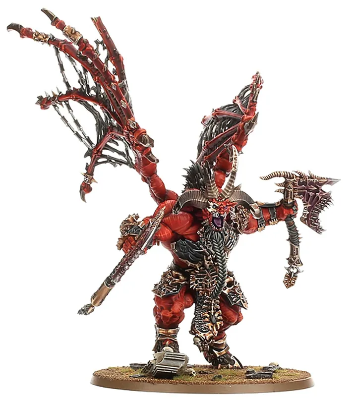
Skarbrand — ปีศาจที่ถูกเนรเทศ
Bloodthirster ที่ถูก Tzeentch หลอกให้โจมตี Khorne และถูกเหวี่ยงลงจากบัลลังก์

Khârn — ผู้ฆ่าไม่เลือกข้าง
Khorne ให้พรนักรบที่ฆ่าไม่เลือกหน้า Khârn เผาที่หลบภัยของพวกเดียวกันบน Skalathrax และกลายเป็นที่โปรดปรานของเทพ
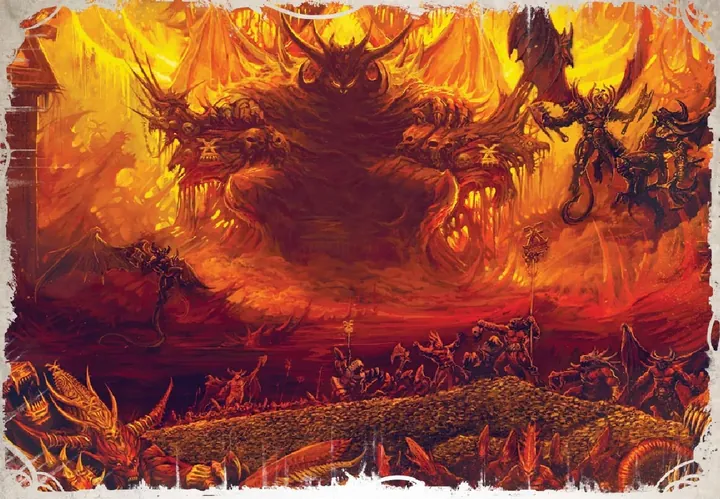
"เลือดไม่สนว่ามาจากไหน"
Khorne ไม่สนใจแผนการ เขาต้องการเพียงเลือด เกลียดพ่อมดและเวทมนตร์ และดูถูกผู้ที่ไม่สู้ด้วยตัวเอง — ศัตรูตัวฉกาจคือ Slaanesh
Nurgle (เนอร์เกิล)
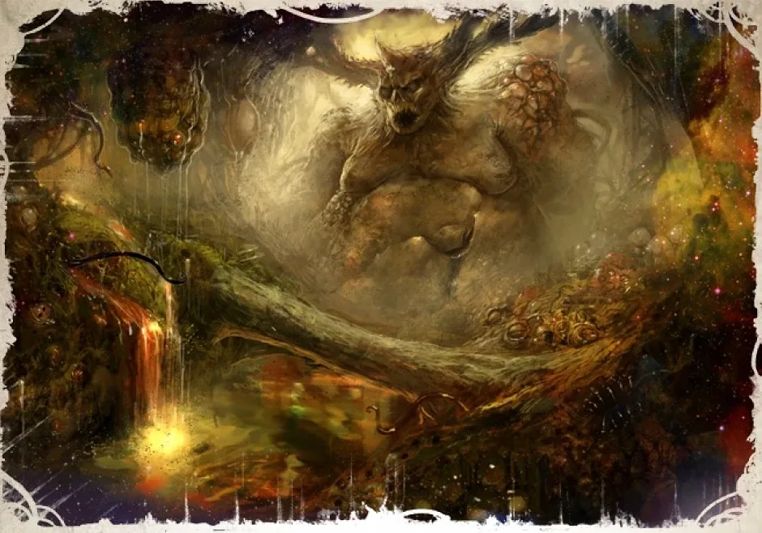

เกิดจากความกลัวตายและความสิ้นหวัง Nurgle ถูกเรียกว่า 'ปู่' เพราะรักผู้บูชาจริง ๆ — มอบโรคเป็นของขวัญและทำให้พวกเขาไม่รู้สึกเจ็บ เขาจับเทพธิดา Isha ของ Aeldari ขังไว้ในสวนของตัวเอง
ผู้ติดตามสำคัญ: Death Guard, Mortarion, Typhus
ต้นกำเนิด
Nurgle เกิดจากความกลัวความตาย ความสิ้นหวัง และความพยายามอยู่รอดของสิ่งมีชีวิต เขาคือวงจรของ "ความเน่าเปื่อยและการเกิดใหม่" ผู้ติดตามเรียกเขาว่า Grandfather Nurgle (คุณปู่ Nurgle) เพราะเขารักผู้ติดตามจริง ๆ และมอบโรคให้เป็น "ของขวัญ" ที่ทำให้ไม่กลัวความเจ็บปวดอีก เขาอาศัยในคฤหาสน์ผุพังกลาง Garden of Nurgle ต้มน้ำยาโรคระบาดในหม้อยักษ์
วีรกรรมและแผนการ
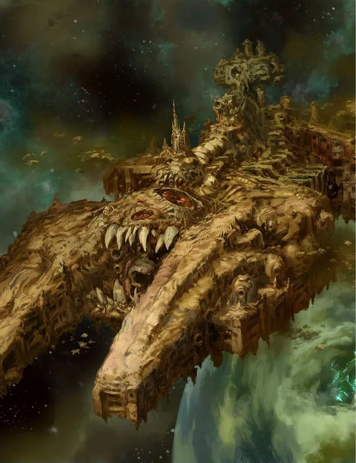
Death Guard ตกสู่ Nurgle
ใช้โรคระบาด "Destroyer Plague" บนยาน Terminus Est เพื่อบังคับให้ Mortarion ยอมเป็นทาส
Isha — เทพธิดาในคุก
Nurgle จับ Isha เทพธิดาแห่งความอุดมสมบูรณ์ของ Aeldari มาขังในคฤหาสน์ และใช้เธอทดลองโรคระบาดใหม่

Plague Wars — บุก Ultramar
ส่ง Mortarion และ Death Guard บุกอาณาจักร Ultramar ของ Guilliman ในยุค Era Indomitus
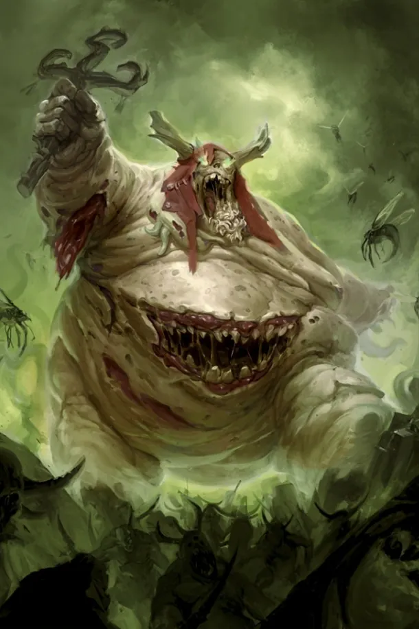
ปีศาจที่ "ใจดี"
ปีศาจของ Nurgle เช่น Rotigus และ Ku'gath ร่าเริง ขยันทำงาน และอยากแบ่งปันโรคให้ทุกคน — ความน่ากลัวที่มาในรูปแบบความเมตตา
Tzeentch (ซีนช์)
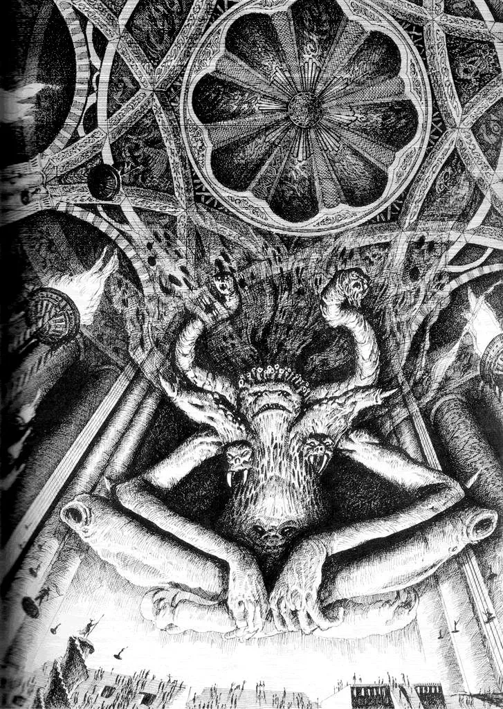

'Changer of Ways' ผู้ถักทอแผนการที่ซ้อนกันไม่รู้จบ ทุกความหวังและความทะเยอทะยานป้อนพลังให้เขา ศัตรูตัวฉกาจคือ Nurgle เพราะความเสื่อมหยุดนิ่งตรงข้ามกับการเปลี่ยนแปลง
ผู้ติดตามสำคัญ: Thousand Sons, Magnus, Ahriman
ต้นกำเนิด
Tzeentch เกิดจากความหวัง ความทะเยอทะยาน และความต้องการเปลี่ยนแปลงของสิ่งมีชีวิต เขาคือ Changer of Ways เทพแห่งแผนการที่ซ้อนแผนการ อาศัยใน Crystal Labyrinth เขาวงกตคริสตัลที่เปลี่ยนรูปตลอดเวลา ทุกความพ่ายแพ้ของเขาอาจเป็นส่วนหนึ่งของแผนที่ใหญ่กว่า — แม้แต่ความพ่ายแพ้ของตัวเองก็ตาม
วีรกรรมและแผนการ

Magnus — Primarch ที่ขายวิญญาณเพื่อความรู้
หลอก Magnus ด้วยการช่วยรักษาการกลายพันธุ์ของ Legion แลกกับการผูกพัน จนสุดท้ายได้ทั้ง Primarch และ Legion
หลอก Skarbrand ให้โจมตี Khorne
ใช้คำพูดล่อลวง Bloodthirster ผู้ยิ่งใหญ่ให้ทรยศเทพของตัวเอง

Rubric of Ahriman
Ahriman ร่ายคาถาหยุดการกลายพันธุ์ แต่ผลลัพธ์เปลี่ยนทหารเป็นฝุ่นในเกราะ — หลายคนเชื่อว่า Tzeentch บิดคาถาให้เป็นอย่างนั้น
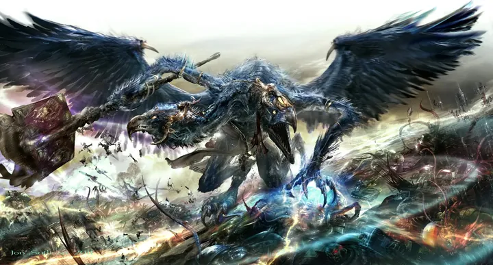
Kairos Fateweaver — ผู้เห็นอดีตและอนาคต
Lord of Change สองหัว หัวหนึ่งเห็นอดีต อีกหัวเห็นอนาคต แต่หัวหนึ่งพูดความจริง อีกหัวพูดโกหก — ไม่มีใครรู้ว่าหัวไหน
Slaanesh (สลาเนช)
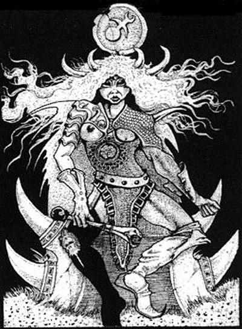

เทพองค์ที่อายุน้อยที่สุด ถือกำเนิดราว M30 จากความเสื่อมของอาณาจักร Aeldari เสียงกรีดร้องตอนเกิดกลืนวิญญาณ Aeldari นับพันล้าน (The Fall) และเกิด Eye of Terror ทุกวิญญาณ Aeldari เป็น 'อาหาร' ของ Slaanesh
ผู้ติดตามสำคัญ: Emperor's Children, Fulgrim, Lucius
ต้นกำเนิด
Slaanesh เป็นเทพองค์ที่อายุน้อยที่สุด เกิดจากความหมกมุ่นในความสุขและความโหดร้ายของอาณาจักร Aeldari เมื่อราว M30 เสียงกรีดร้องแรกของ Slaanesh คือคลื่นพลังจิตที่ฆ่า Aeldari หลายพันล้านและเปิด Eye of Terror เทพองค์นี้แสวงหาความสมบูรณ์แบบและความรู้สึกสุดขีดทุกรูปแบบ และ "หิว" วิญญาณของ Aeldari เป็นพิเศษ
วีรกรรมและแผนการ

The Fall — กลืนกินเทพทั้งวิหาร
หลังถือกำเนิด Slaanesh ไล่กลืนเทพของ Aeldari เกือบทุกองค์

ดาบบนดาว Laer
ปีศาจของ Slaanesh ในดาบค่อย ๆ ครอบงำ Fulgrim จนเขาฆ่า Ferrus Manus พี่ชายที่รักที่สุด

ความเป็นอมตะของ Lucius
Slaanesh มอบพรให้ Lucius the Eternal — ใครฆ่าเขาแล้วรู้สึกภูมิใจแม้เสี้ยววินาที จะกลายเป็นร่างใหม่ของ Lucius
Chaos Undivided และเทพองค์อื่น
- Chaos Undivided — การบูชาเทพทั้งสี่ในฐานะพลังเดียวกัน โดยไม่เลือกข้าง เช่น Black Legion ของ Abaddon
- Malice (มาลิซ) — เทพ Chaos องค์ที่ห้าที่เป็นตัวแทนของ Chaos ที่ทำลายตัวเอง คอยขัดขวางเทพองค์อื่น แต่ก็ไม่ใช่มิตรของจักรวรรดิ
- Daemon Prince — ผู้บูชาที่ได้รับพรจนกลายเป็นปีศาจ เช่น Be'lakor (คนแรก) และ Primarch ผู้ทรยศทั้งหลาย

03เทพของ Aeldari — Aeldari Pantheon
เทพของ Aeldari เกือบทั้งหมดถูก Slaanesh กลืนกินระหว่าง The Fall เหลือรอดเพียง Khaine, Cegorach และ Isha ส่วน Ynnead เป็นเทพองค์ใหม่ที่กำลังก่อตัว
Kaela Mensha Khaine (ไคน์ — มือเปื้อนเลือด)
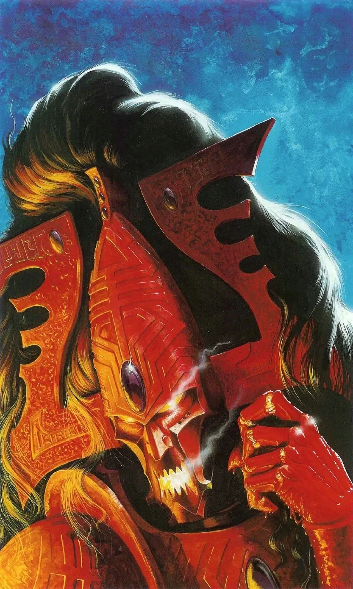
เทพสงครามที่ต่อสู้กับ Slaanesh ระหว่าง The Fall จนร่างแตกเป็นชิ้น ๆ ชิ้นส่วนของเขาหลับใหลอยู่ในห้องหัวใจของแต่ละ Craftworld และจะตื่นเป็น Avatar of Khaine ในยามสงคราม
ต้นกำเนิด
Kaela Mensha Khaine คือเทพสงครามและการฆ่าของ Aeldari ชื่อแปลว่า "Bloody-Handed God" ในตำนานเขาฆ่าวีรบุรุษ Eldanesh ในการต่อสู้ มือของเขาจึงเปื้อนเลือดตลอดกาล เมื่อ Slaanesh ถือกำเนิด Khaine สู้จนร่างแตกเป็นเศษเหล็กหลอมเหลวกระจายไปตาม Craftworld ต่าง ๆ
วีรกรรมและแผนการ
Avatar of Khaine
ใน Craftworld ทุกแห่งมีเศษร่างของ Khaine หลับอยู่ ในยามสงครามจะถูกปลุกเป็นร่างเหล็กหลอมเหลวที่ถือดาบ Suin Daellae

Rhana Dandra — สงครามสุดท้าย
คำทำนายของ Aeldari: ในวันสิ้นโลก เศษของ Khaine จะรวมเป็นหนึ่งเพื่อต่อสู้กับ Chaos ครั้งสุดท้าย
Cegorach (ซีโกรัค — เทพหัวเราะ)

เทพเจ้าเจ้าเล่ห์ที่หนีรอดจาก Slaanesh มาได้ คอยปกป้อง Black Library คลังความรู้เรื่อง Chaos
ต้นกำเนิด
Cegorach คือ Laughing God เทพแห่งการหัวเราะ การหลอกล่อ และการแสดงของ Aeldari เป็นเทพองค์เดียวที่หนีรอดจาก Slaanesh ได้ด้วยการซ่อนตัวใน Webway
วีรกรรมและแผนการ
ผู้เฝ้า Black Library
Cegorach ดูแล Black Library ห้องสมุดลับใน Webway ที่เก็บความรู้เรื่อง Chaos ทั้งหมด และส่ง Harlequins ไปแสดงเรื่องราวเตือนใจทั่วกาแล็กซี

นักเล่นเกมกับเทพ Chaos
ตำนานเล่าว่า Cegorach หลอกเทพองค์อื่นด้วยมุกตลกและกลลวงอยู่เสมอ เป็นศัตรูที่ Slaanesh อยากได้ตัวที่สุด — Harlequins บางคนเชื่อว่าเขามีแผนเอาชนะ Slaanesh ในวันหนึ่ง
Ynnead (อินนีด — เทพแห่งความตาย)

ชาว Aeldari เชื่อว่า Ynnead จะก่อตัวจากวิญญาณ Aeldari ที่ตายแล้ว และเมื่อตื่นเต็มที่จะทำลาย Slaanesh ได้ ปัจจุบันแสดงตัวผ่าน Yncarne และ Yvraine
ต้นกำเนิด
Ynnead คือเทพแห่งความตายของ Aeldari ที่ "ยังไม่เกิดเต็มที่" เชื่อกันว่าจะก่อตัวจากวิญญาณ Aeldari ทั้งหมดที่ถูกเก็บใน Infinity Circuit ของ Craftworld เมื่อชาวเผ่าตายครบ Ynnead จะตื่นและทำลาย Slaanesh ได้ในที่สุด
วีรกรรมและแผนการ

ปลุก Yvraine จากความตาย
Ynnead ปลุก Yvraine ที่ตายในสนามกลาดิเอเตอร์ของ Commorragh ให้เป็นผู้เผยพระวจนะ

ร่วมชุบชีวิต Guilliman
Ynnari ใช้พลังของ Ynnead ร่วมกับ Belisarius Cawl ปลุก Roboute Guilliman — แลกกับการผลักดันแผนของเทพที่ยังไม่ตื่น
- Isha (อิชา) — เทพธิดาแห่งการเก็บเกี่ยวและผู้เป็นแม่ของชาว Aeldari ปัจจุบันถูก Nurgle ขังไว้ แต่ยังส่งความช่วยเหลือเล็ก ๆ ออกมาได้
- Asuryan (อะซูรยาน) — ราชาแห่งเทพ ที่มาของชื่อ Asuryani — ถูกทำลายระหว่าง The Fall
- Vaul (วอล) — เทพช่างตีเหล็ก ผู้สร้าง Talismans of Vaul (ที่จักรวรรดิเรียกว่า Blackstone Fortresses) เพื่อใช้ต่อสู้ C'tan
04Gork และ Mork — เทพของ Orks
Gork & Mork (กอร์ก และ มอร์ก)
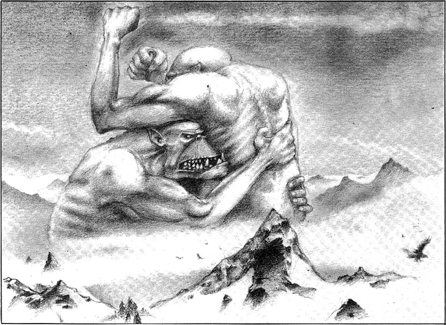
เทพคู่ที่เกิดจากพลังจิตรวมของ Orks — ใน Warp พวกมันเป็นยักษ์สีเขียวที่ทะเลาะกันและทุบตีเทพ Chaos ได้เป็นครั้งคราว Orks เชื่อว่าทั้งคู่ตัดสินกันว่าใครเก่งกว่าไม่ได้ ส่วน Ghazghkull ประกาศว่าตัวเองเป็นศาสดาของทั้งสององค์
ต้นกำเนิด
Gork (โหดแต่เจ้าเล่ห์) และ Mork (เจ้าเล่ห์แต่โหด) เกิดจากความเชื่อของ Orks ทุกตัวใน Warp เป็นเทพที่ชอบสงครามและชอบชนะ Orks เชื่อว่าเทพทั้งสองจะมาลงโลกเมื่อ WAAAGH! ใหญ่พอ
วีรกรรมและแผนการ

เรียก Ghazghkull เป็นศาสดา
หลัง Ghazghkull ถูกยิงหัวและ Painboy ใส่แผ่นเหล็กให้ เขาเริ่มได้ยินเสียงของ Gork และ Mork สั่งให้ทำสงครามที่ยิ่งใหญ่ที่สุด
ตำนานของ Orks
Orks เล่ากันว่า Gork และ Mork เคยต่อยเทพ Chaos จนเจ็บตัว — เป็นเพียงความเชื่อของ Orks ที่ไม่มีใครยืนยัน แต่ในจักรวาลที่ความเชื่อมีพลัง ก็ไม่มีใครกล้าบอกว่าไม่จริง
05C'tan — เทพแห่งดวงดาว
C'tan (อ่านว่า เคอ-ทาน) เป็นสิ่งมีชีวิตพลังงานที่เกิดตั้งแต่ยุคแรกของจักรวาล กินพลังงานของดวงดาว พวกมันหลอกให้ชาว Necrontyr ยอมแลกร่างเนื้อหนังเป็นร่างโลหะ แล้วกินวิญญาณของพวกเขา หลัง War in Heaven ชาว Necrons ทรยศและทุบ C'tan แตกเป็นชิ้น ๆ (C'tan Shard) ขังไว้เป็นอาวุธ
Mag'ladroth the Void Dragon (มากลาดรอธ — มังกรแห่งห้วงอวกาศ)
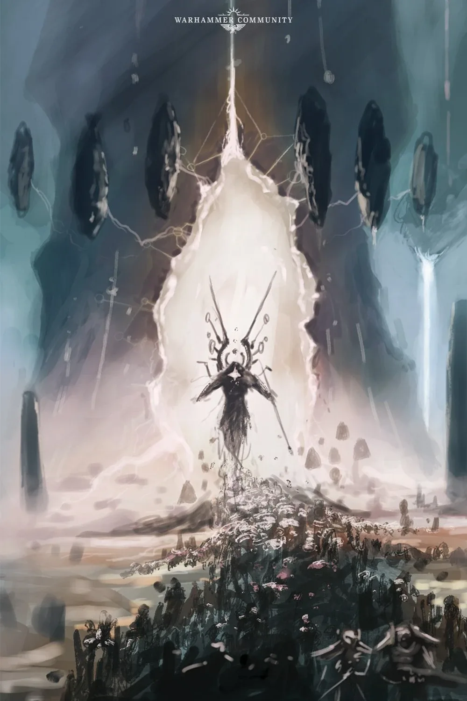
C'tan ที่ทรงพลังที่สุด เชื่อกันว่าถูกขังอยู่ใต้ Noctis Labyrinthus บนดาวอังคาร และ Tech-priest บางคนเชื่อว่ามันคือ 'Machine God' ที่แท้จริง
ต้นกำเนิด
C'tan แห่งไฟและเทคโนโลยี ถูกทำลายและกักขังในยุคท้ายของ War in Heaven ข่าวลือว่าเศษร่างของมันถูกขังอยู่ใต้ Noctis Labyrinth บนดาว Mars
วีรกรรมและแผนการ
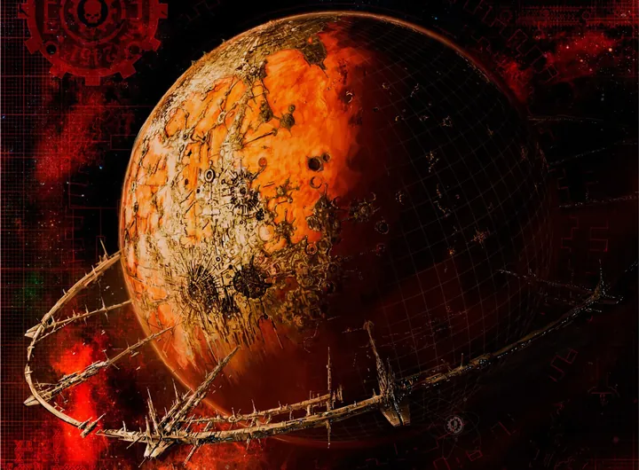
Omnissiah คือ Void Dragon?
ทฤษฎีที่เป็นความลับสุดยอดของ Mechanicus: "เทพเครื่องจักร" ที่พวกเขาบูชาอาจคือ C'tan ที่หลับอยู่ใต้ Mars — สิ่งที่ Belisarius Cawl ดูเหมือนจะรู้บางอย่าง
Aza'gorod the Nightbringer (อาซากอรอด — ผู้นำความมืด)
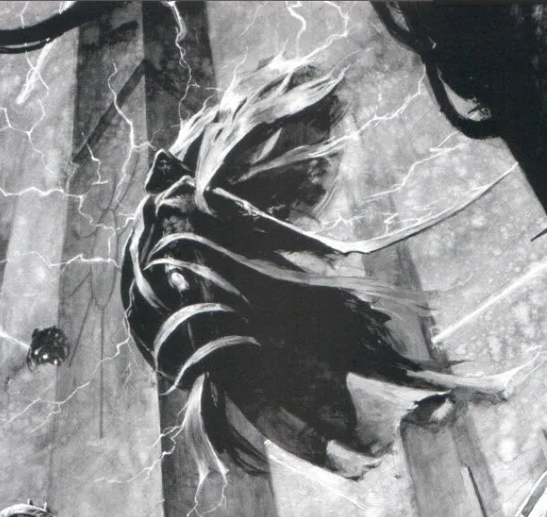
เชื่อกันว่าภาพ 'ยมทูตถือเคียว' ในตำนานของหลายเผ่ามาจากความกลัว Nightbringer
ต้นกำเนิด
C'tan แห่งความตาย เชื่อกันว่าเป็นที่มาของภาพ "ยมทูตถือเคียว" ในวัฒนธรรมของหลายเผ่า เพราะมันเคยล่าและกินสิ่งมีชีวิตมาตั้งแต่ยุคโบราณ
วีรกรรมและแผนการ
ความกลัวความตายของทุกเผ่า
ตำนานเล่าว่าความกลัวความตายที่ฝังในจิตใจของเผ่าต่าง ๆ มาจาก Nightbringer ที่เคยกินวิญญาณของพวกเขา
Mephet'ran the Deceiver (เมเฟตราน — ผู้หลอกลวง)
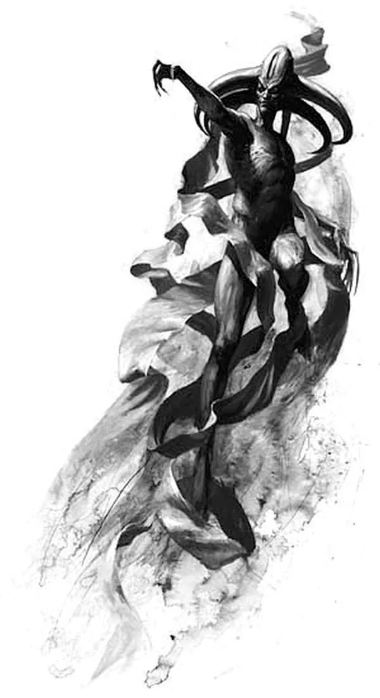
C'tan เจ้าเล่ห์ที่หลอกลวงทั้ง Necrons และ C'tan ด้วยกัน
ต้นกำเนิด
C'tan นักหลอกลวงที่เจ้าเล่ห์ที่สุด เปลี่ยนรูปร่างและหลอกทั้งสิ่งมีชีวิตและ C'tan ด้วยกันเอง
วีรกรรมและแผนการ
หลอก C'tan ให้กินกันเอง
ตำนานของ Necrons เล่าว่า Deceiver ยุยงให้ C'tan ต่อสู้และกินกันเอง ทำให้พวกมันอ่อนแอลงก่อนที่ Necrons จะทรยศทำลายทั้งหมด
06Omnissiah และ Machine God — เทพของ Adeptus Mechanicus
Machine God / Omnissiah (แมชชีน ก็อด / ออมนิสไซอาห์)
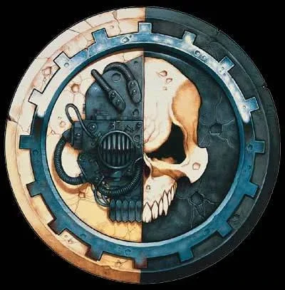
Tech-priest แห่งดาวอังคารบูชา Machine God — เทพแห่งความรู้และเครื่องจักร และเชื่อว่ามี Omnissiah อวตารของ Machine God ในร่างมนุษย์
เมื่อจักรพรรดิมาถึงดาวอังคาร Mechanicum ยอมรับพระองค์เป็น Omnissiah และทำ Treaty of Mars ร่วมมือกับ Terra — จุดเริ่มต้นของความเป็นพันธมิตรระหว่างสองดาว
ต้นกำเนิด
Adeptus Mechanicus บูชา Machine God พลังที่อยู่ในเครื่องจักรทุกชิ้น (Motive Force) และ Omnissiah ร่างของเทพเครื่องจักรในโลกจริง ตามสนธิสัญญา Olympus พวกเขายอมรับว่าจักรพรรดิคือ Omnissiah — แม้หลายคนแอบสงสัยมาตลอด
วีรกรรมและแผนการ
สนธิสัญญา Olympus
จักรพรรดิเดินทางไป Mars และได้รับการยอมรับว่าเป็น Omnissiah แลกกับอิสรภาพของ Mars และการผลิตอาวุธให้ Great Crusade

Schism of Mars
ในยุค Heresy Mechanicus แตกออกเป็นสองฝ่าย เพราะฝ่ายหนึ่งไม่เชื่อว่าจักรพรรดิคือ Omnissiah จริง
07สิ่งอื่นที่ถูกบูชาเหมือนเทพ
Hive Mind & Four-Armed Emperor (จิตรวม และ จักรพรรดิสี่แขน)

Hive Mind ไม่ใช่เทพแต่เป็นจิตรวมขนาดมหึมาที่สั่งการ Tyranids ทุกตัว
Genestealer Cults บูชา 'Four-Armed Emperor' ที่พวกเขาคิดว่าจะมาช่วยให้รอด — แต่จริง ๆ แล้วคือ Hive Fleet ที่จะมากินพวกเขาเอง
Old Ones (โอลด์ วันส์)
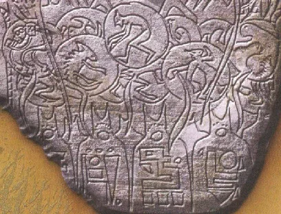
เผ่าพันธุ์โบราณที่สร้าง Webway และสร้างหรือยกระดับหลายเผ่า เช่น Aeldari, และ Orks (Krork) เพื่อต่อสู้กับ Necrons ใน War in Heaven ปัจจุบันหายไปแล้ว
- Leagues of Votann — เคารพ Votann (Ancestor Core) คอมพิวเตอร์อัจฉริยะโบราณ เหมือนเป็นบรรพบุรุษ
- T'au — ไม่มีเทพ แต่ยึดปรัชญา Greater Good และเคารพ Ethereal ผู้ปกครอง
The First Heretic, Horus RisingImperial Truth — "ไม่มีพระเจ้า"
จักรพรรดิรู้ว่าศรัทธาของมนุษย์คือเชื้อเพลิงของสิ่งมีชีวิตใน Warp จึงประกาศ Imperial Truth: จักรวาลอธิบายได้ด้วยวิทยาศาสตร์ ไม่มีพระเจ้า ไม่มีปีศาจ และสั่งทำลายศาสนาบนทุกดาวที่พิชิต
แต่ความลับที่พระองค์ไม่ยอมบอกใคร — แม้แต่บุตรของตน — ว่า Chaos มีอยู่จริง ทำให้ Primarch หลายคนไม่ได้เตรียมใจรับมือเมื่อถูกล่อลวง Lorgar ที่ถูกตำหนิเรื่องบูชาจักรพรรดิเป็นพระเจ้าจึงหันไปหาเทพที่ "ยอมรับการบูชา" — จุดเริ่มต้นของ Horus Heresy
ที่มา: The First Heretic, Horus Rising
Horus Heresy seriesLectitio Divinitatus — ศาสนาที่เกิดขึ้นเอง
หนังสือ Lectitio Divinitatus เผยแพร่อย่างลับ ๆ ในหมู่ทหารและประชาชน เนื้อเรื่องเผยว่า Lorgar แห่ง Word Bearers เป็นผู้เขียน หลัง Heresy ลัทธินี้กลายเป็น Imperial Creed ศาสนาประจำจักรวรรดิ นักบุญอย่าง Celestine และปาฏิหาริย์ของ Sisters of Battle ชี้ว่า "ความศรัทธาต่อจักรพรรดิ" มีพลังจริงใน Warp
ที่มา: Horus Heresy series
Betrayer (Horus Heresy), Arks of OmenAngron — Primarch ที่ถูกดึงสู่ความคลั่ง
Angron มี Butcher's Nails ในสมองอยู่แล้ว ความคลั่งของเขาคือเครื่องสังเวยชั้นดีสำหรับ Khorne ระหว่าง Shadow Crusade อุปกรณ์ Butcher's Nails กัดกินสมองของ Angron จนใกล้ตาย Lorgar จึงพาเขากลับไปยังดาวบ้านเกิด Nuceria และท่ามกลางการรบกับกองเรือของ Guilliman ที่ตามมาถึง Lorgar ทำพิธีส่ง Angron สู่ Khorne — Angron ถูกยกขึ้นเป็น Daemon Prince ร่างยักษ์มีปีก และสังหาร Librarian ของ Legion ตัวเองที่พยายามขัดขวาง
หมื่นปีต่อมา เขาถูกเนรเทศกลับ Warp หลายครั้ง แต่กลับมาในเหตุการณ์ Arks of Omen พร้อมกองทัพ World Eaters เพื่อบุก Terra อีกครั้ง
ที่มา: Betrayer (Horus Heresy), Arks of Omen
Codex: Chaos DaemonsSkarbrand — ปีศาจที่ถูกเนรเทศ
Skarbrand เคยเป็น Bloodthirster ที่ยิ่งใหญ่ที่สุดของ Khorne แต่ Tzeentch ใช้คำพูดล่อลวงจนเขาเชื่อว่าตนสมควรนั่งบนบัลลังก์ Skarbrand จู่โจม Khorne ขณะที่เทพกำลังเผลอ ฟันได้เพียงแผลเล็กน้อย Khorne ขว้างเขาลงมาจากป้อม ร่างกระแทกพื้นแปดวันแปดคืนจนปีกฉีกขาด
ปัจจุบัน Skarbrand คือความโกรธที่มีชีวิต ใครที่อยู่ใกล้ — ทั้งมิตรและศัตรู — จะคลั่งต่อสู้กันเอง เป็นตัวอย่างว่าแม้แต่ปีศาจของ Khorne ก็ตกเป็นเหยื่อแผนของ Tzeentch
ที่มา: Codex: Chaos Daemons
The Flight of the Eisenstein, The Buried DaggerDeath Guard ตกสู่ Nurgle
ระหว่างเดินทางไปร่วม Siege of Terra กองเรือ Death Guard ติดอยู่ใน Warp ด้วยฝีมือของ Typhus ที่แอบบูชา Nurgle โรคระบาด Destroyer Plague แพร่ไปทั่ว ทหารที่ไม่เคยป่วยเพราะร่างกาย Space Marine เริ่มเน่าเปื่อยแต่ไม่ตาย
Mortarion ผู้เกลียดพ่อมดและเวทมนตร์ที่สุด ต้องเลือกระหว่างดูลูกน้องทรมานตลอดไปกับยอมรับข้อเสนอของ Nurgle เขาเลือกข้อหลัง — และ Death Guard ทั้ง Legion กลายเป็นกองทัพโรคระบาดที่ทนทานที่สุดในจักรวาล
ที่มา: The Flight of the Eisenstein, The Buried Dagger
Codex: Aeldari, Codex: Chaos DaemonsIsha — เทพธิดาในคุก
เมื่อ Slaanesh ถือกำเนิดและกินเทพ Aeldari เกือบทุกองค์ Nurgle ช่วง Isha ไว้ได้ — แต่ไม่ใช่เพื่อช่วยเหลือ เขาขังเธอไว้ในคฤหาสน์และหลงรักเธอแบบบิดเบี้ยว ป้อนโรคระบาดชนิดใหม่ให้เธอลองก่อนปล่อยสู่จักรวาล
แต่ Isha แอบกระซิบยารักษาโรคให้มนุษย์และ Aeldari ผ่านความฝัน ทำให้ Nurgle ต้องคิดโรคใหม่อยู่เสมอ ตำนาน Aeldari เล่าว่านี่คือเหตุผลที่หลายโรคมีทางรักษา
ที่มา: Codex: Aeldari, Codex: Chaos Daemons
A Thousand Sons, Prospero BurnsMagnus — Primarch ที่ขายวิญญาณเพื่อความรู้
Thousand Sons มีพันธุกรรมที่ทำให้กลายพันธุ์ (Flesh-change) Magnus ทำสัญญากับสิ่งมีชีวิตใน Warp ที่เขาคิดว่าเป็นเพียง "พลังที่ใช้ได้" เพื่อหยุดการกลายพันธุ์ มันคือ Tzeentch
เมื่อ Magnus รู้ว่า Horus จะทรยศ เขาส่งคำเตือนผ่าน Warp ไปยังพระราชวัง Terra ทำลายโครงการ Webway ของจักรพรรดิ จักรพรรดิสั่งจับตัว แต่ Horus เปลี่ยนคำสั่งเป็น "ทำลาย" Space Wolves เผา Prospero Magnus ในความสิ้นหวังจึงยอมมอบตัวให้ Tzeentch — ทุกขั้นตอนเป็นไปตามที่เทพแห่งแผนการคาดไว้
ที่มา: A Thousand Sons, Prospero Burns
Codex: AeldariThe Fall — กลืนกินเทพทั้งวิหาร
เมื่อ Slaanesh ตื่นขึ้น มันออกล่าเทพของ Aeldari ทีละองค์ — กลืนกิน Asuryan ราชาแห่งเทพ และเทพองค์อื่น ๆ เกือบหมด Khaine เทพสงครามต่อสู้จนร่างแตกเป็นชิ้น Cegorach เทพหัวเราะหนีรอดเข้า Webway ส่วน Isha ถูก Nurgle ชิงตัวไป
นับจากนั้น วิญญาณของชาว Aeldari ทุกคนที่ตายโดยไม่มีหินวิญญาณจะถูก Slaanesh ดูดกิน — เหตุผลที่ทั้งเผ่าต้องพก Spirit Stone และเหตุผลที่ Drukhari ต้องทรมานผู้อื่นเพื่อชดเชยวิญญาณที่ถูกดูด
ที่มา: Codex: Aeldari
Fulgrim (Horus Heresy)ดาบบนดาว Laer
บนดาว Laer Emperor's Children พบวิหารของเผ่าเอเลียนที่บูชา Slaanesh Fulgrim หยิบดาบที่มีปีศาจสิงอยู่มาเป็นของตัวเอง ปีศาจกระซิบกับเขาทุกวัน ปลุกความหยิ่งในความสมบูรณ์แบบ
เมื่อ Horus ทรยศ Fulgrim พยายามชักชวน Ferrus Manus แต่ถูกปฏิเสธ ทั้งสองต่อสู้กัน และที่ Isstvan V Fulgrim ตัดหัว Ferrus ด้วยดาบเล่มนั้น ความสิ้นหวังทำให้ปีศาจยึดร่างของเขา และภายหลังเขากลายเป็น Daemon Prince ของ Slaanesh
ที่มา: Fulgrim (Horus Heresy)